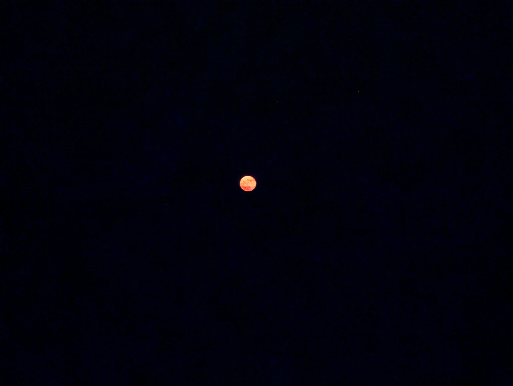
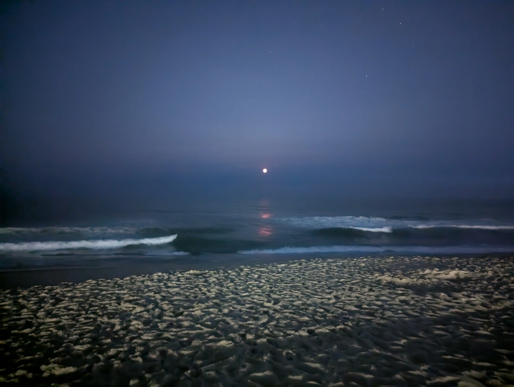

Strawberry Moon
Date: June 11, 2025 — Ocean City, Maryland
This wasn’t something I planned to see. Honestly, I didn’t even know the term “strawberry moon” until that night.
I was sitting on the balcony of my hotel in Ocean City, looking out over the ocean. Suddenly, I noticed this red, perfectly round shape hanging low in the sky. I had been wondering where the moon was—and then it hit me. That red circle was the moon.
According to this website, the strawberry moon is June’s full moon—usually the last full moon of spring or the first of summer. The name comes from the Algonquian tribes in the northeastern U.S., who used it to mark the ripening of June-bearing strawberries.
The moon looks red when it’s close to the horizon. Here’s a photo I took with my Pixel Pro 7 in night mode, zoomed in 5x:

And here’s the same moon, not zoomed in:

As it rises, the red slowly shifts to orange, then fades into white as the moon climbs higher in the sky.
Article tags: Personal